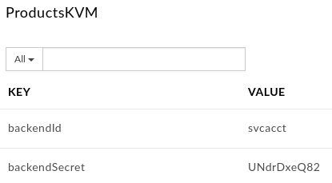

Let's say you access a service which requires credentials, or you want to store other sensitive data such as credentials, keys, etc.
Most attacks start from unauthorized access to data that has not been protected properly, even from internal access.
We'll learn how to minimize exposure and protect the credentials to our backend system.
What you'll learn
- How to create and configure an encrypted KVM (key value map)
- How to safely retrieve and use data from a KVM
What you'll need
- Your proxy created in the previous lab
Use case
You want to protect backend credentials from exposure.
Download a working solution to the previous lab as a proxy bundle ZIP file:
Prerequisites:
- Target Server: TS-Retail (instructions in lab 2)
- Product, Developer and App (instructions in lab 3)
Find your spec ID. When you open your spec in the spec editor, the link will be in this format, with the spec ID at the end of the URL:
https://apigee.com/organizations/YOURORG/specs/folder/FOLDERID/editor/YOURSPECID
Navigate to your proxy and upload the bundle as a new revision:

Select the association.json resource. Replace YOURORG and YOURSPECID with the values from the spec URL.

Once updated, the association.json should look something like this:
{
"url": "/organizations/apigeek-eval/specs/doc/207966/content"
}
Click Save to save your proxy. Open the Deployment menu, and check the deployment status. Click on test to deploy this revision of the proxy.

Test will be green when it is deployed.

- Create a new encrypted KVM with credentials
- Load the credentials from the KVM and pass to the protected backend
Go into ‘Admin/Environments' and select ‘Key Value Maps:
Make sure the ‘test' environment is selected:
Click on ‘+ Key value map' button on the top right corner:
Fill in the name for the KVM, make sure you check the ‘Encrypted' box, and click Add:
KVM Name | ProductsKVM |
Now, select the newly created KVM to be able to add new entries:
Click on the ‘+' button to add entries to it. We'll be adding the backend id and secret entries by repeating the same process.
Example:

Name | Value |
backendId | svcacct |
backendSecret | UNdrDxeQ82 |
Make sure you don't include any leading or trailing spaces in your names or values.

Note that you can see the values after you enter them, even though the KVM is encrypted. The values are just being shown client-side in your browser. When you are done adding the entries and you refresh your browser, the credentials will no longer be visible in the UI:
Create the same KVM in the prod environment if you want to be able to promote your proxy to prod.
Select the updateProductById resource to see its UI representation of the policies. It is empty for now and we'll be adding 2 new policies to its request path.
Click on ‘+ Step':
In the ‘Add Step' pop up, select the Key Value Map Operations policy, and change the name:
KVM-GetCredentials
Click on Add:
Overwrite the policy's configuration with the following:
<KeyValueMapOperations async="false" continueOnError="false" enabled="true" name="KVM-GetCredentials" mapIdentifier="ProductsKVM">
<ExclusiveCache>false</ExclusiveCache>
<ExpiryTimeInSecs>60</ExpiryTimeInSecs>
<Get assignTo="private.backendId">
<Key>
<Parameter>backendId</Parameter>
</Key>
</Get>
<Get assignTo="private.backendSecret">
<Key>
<Parameter>backendSecret</Parameter>
</Key>
</Get>
<Scope>environment</Scope>
</KeyValueMapOperations>We are loading the data from the KVM into 2 variables prefixed with ‘private'. These variables will be masked in the trace. Values from encrypted KVMs must be assigned to private variables.
We will now use these variables to build an Authorization header for our backend service.
For that, we'll add a Basic Authentication policy, and name it:
BA-AddAuthHeader
Click Add:
Click on the BasicAuthentication policy and overwrite its configuration with the following:
<BasicAuthentication async="false" continueOnError="false" enabled="true" name="BA-AddAuthHeader">
<Operation>Encode</Operation>
<IgnoreUnresolvedVariables>false</IgnoreUnresolvedVariables>
<User ref="private.backendId"/>
<Password ref="private.backendSecret"/>
<AssignTo createNew="false">request.header.Authorization</AssignTo>
</BasicAuthentication>Your flow should look like this:
Save and deploy your proxy.
To test, first retrieve the list of products by issuing a GET to /products.
Look for a product ID:

Use one of them to test the update product flow:
URL:
PATCH /products/{id}Headers:
apikey: {key of application}
Content-Type: application/jsonBody:
{
"overall_rating": {numerical value}
}You can choose whatever rating you would like. The only field that can be updated for a product is the overall_rating.
Example:
You should get a 200 response code, indicating the rating has been updated. Retrieve the product again to see that it has changed:
You have successfully created an encrypted KVM and stored credentials in it. You then retrieved the credentials and added a Basic auth header to the backend request.